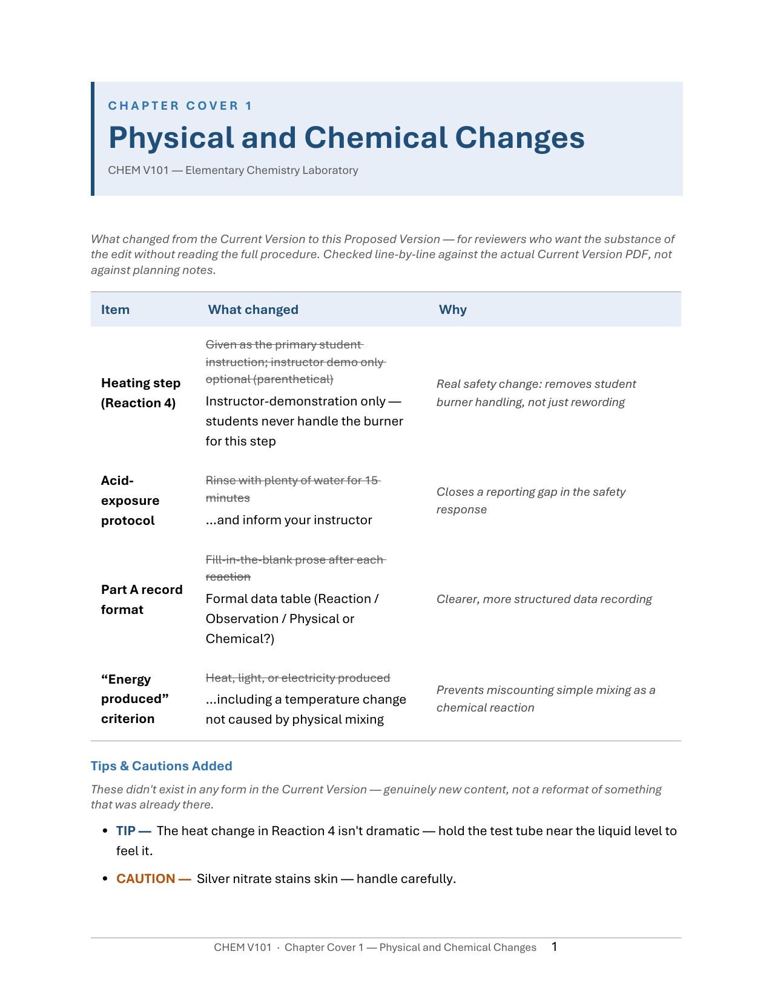
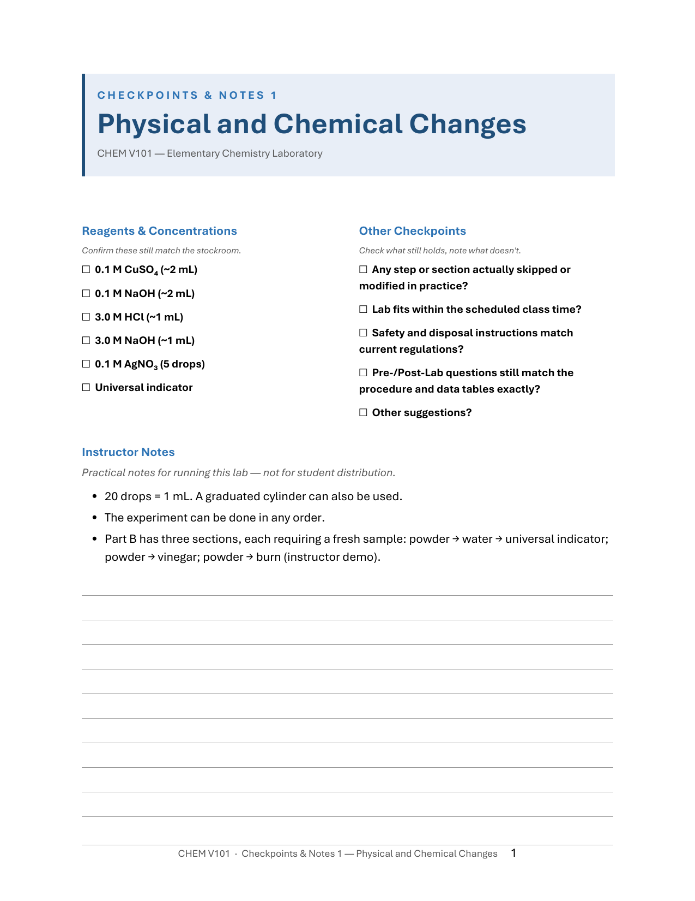

CHEM V101 Lab Manual Renewal Project
Origin
When I began teaching CHEM V101 (formerly V20L), the lab manual worked well. Teaching from it week after week, though, I kept noticing small things I wished were different, and they added up. For example:
- Each lab used its own headings and its own section order. Some combined background and procedure; others split them across pages.
- Instructions switched between commands and passive description with no pattern.
- Equations were saved as images, so they could not be reused or displayed cleanly in Canvas.
- Sample calculations sat inside paragraphs instead of being set out as worked examples.
The manual could still be taught as it was, but the list kept growing, so in Summer 2025 I decided to update the manual myself.
First revision, Summer 2025
The revision had two goals, consistency and readability. There was no editable source file for the manual, so I retyped every lab from the existing copy. The main changes:
- Same structure in every lab. Each one follows the same sections in the same order: Background, Procedure, Data, Post-Lab.
- Numbered steps. Paragraph instructions became numbered steps, each starting with an action verb (Measure, Record, Mix).
- Shorter background. Background text was cut to what students need for that lab.
- Clearer data tables. Tables were given more visual weight, so a new sample is visibly a new sample.
- Safety where it can be seen. Safety points that used to be buried mid-sentence moved into shaded Note and Caution boxes.
In July I sent the proposed direction to Erin Brocker and Kristin Clark, with Antonia Flores copied. Kristin pushed back on a two-column procedure layout, because students need one spaced-out column they can follow and check off. Erin agreed, for accessibility, and I kept the procedure in a single column. Erin also suggested Tahoma for the body text, because it keeps capital I, lowercase l and the numeral 1 distinct, which matters when students read Cl and NaCl. I had planned to use Calibri and switched. Antonia went through the labs for content while I worked on format.
I would have liked to lay the manual out in InDesign, but I built it in Word, because the manual has to stay editable by other instructors and they could not have opened an InDesign file. All the labs were compiled into one formatted document and distributed through Canvas before Fall 2025.
Fall 2025 in use
The revised manual went into classrooms, and problems surfaced that the summer edit had not caught. I had simplified the procedures, which changed the step numbers. To keep the changes small I had left the Pre-Lab and Post-Lab questions as they were, so questions that pointed to a procedure step by number now pointed to the wrong step. Erin Brocker caught this. Step numbering also drifted between labs (one lab began at step 24), and there were typos, inconsistent table captions, and missing units in worked examples.
Because all the labs had been revised in a single round, patching them created new inconsistencies as fast as it fixed old ones.
Erin suggested going back to the previous version, and I agreed. On September 29, 2025, I wrote to the CHEM V101 instructors that the revised manual was withdrawn for now, shared the previous version through the department's Canvas course, and said I would fix the revision and check it with them before releasing it again. I apologized for the disruption and offered two ways to give feedback: printed copies to mark up or a shared document to edit directly. The failure was mine, and my colleagues saw it in the middle of a semester.
Second revision, Summer 2026
Over the winter I decided to stop patching, set up a process that prevents the Fall 2025 failure, and then re-author the manual under it.
In April 2026 I turned the manual's background and procedure sections into Canvas pages, with videos linked to the procedure steps, and asked the department's instructors to review that version. The videos are described on the CHEM V101 Experiment Video Reference Library page.
Diagnosis first. Before writing anything I compared the current printed manual and the failed revision one to one across all seventeen experiments, and recorded a verdict for each experiment in a table. The comparison found nine defects that ran through the whole manual. The first was the Fall 2025 problem: Pre-Lab and Post-Lab questions referred to steps by number ("steps 6–9", "Question N") that no longer matched the procedure, and in some labs the steps they named no longer existed.
The audit also found problems that had nothing to do with formatting:
- A copy-pasted waste-disposal line, "no hazardous material, may be drained to the sink", sat in a barium experiment. That is a safety defect.
- A missing UV blindness warning, and a missing hot-plate burn warning, both restored.
- A specific heat mistyped as 0.131 instead of 0.191, plus an arithmetic error in the same worked example.
- A worked example that contradicted the actual composition of the compound it described.
- Copyrighted material from a commercial supplier in one experiment, and an unlicensed photograph from the web in another, both removed and replaced with diagrams drawn in house.
- A flame test with a history of not reproducing in the actual lab. I removed it and reorganized the experiment around precipitation-based identification.
- A background section describing a pH meter the experiment does not use.
Build system. A shared style module defines the caution badges, the chemical-formula helper, the answer boxes and the two-column calculation layout. Scripts generate each experiment, and an assembler produces the table of contents, global page numbers, PDF bookmarks, and the odd-page section starts the print run requires. The manual can be rebuilt from its source files at any time. Each experiment was saved as its own commit (a recorded version with a note explaining the change), so the revision history is the audit trail.
I settled two design decisions by building the options and comparing them: two full design samples, and five body fonts typeset onto the same page.
Answer keys as verification. I wrote all thirty-four answer keys myself, because working every solution is how I find out whether every question can be answered.
The student manual is 218 pages, with seventeen experiments, six appendices and front matter. It includes the re-typeset safety rules, an equipment poster, and a calculator appendix rendered in the keycap notation from the device's own guide, so a student can follow the buttons visually.
Review copy for colleagues, with change notes
The review copy is a separate 277-page document built to draw specific feedback. Each experiment opens with a table comparing the current version with the proposed one (item, what changed, why). I wrote the tables by checking all seventeen experiments page by page against the actual old manual, because a table is only useful to a reviewer if it is exact. After the table comes a checkpoint sheet listing real reagent concentrations and volumes for the reviewer to confirm, with safety and timing checks, then the lab body, then the answer keys, which show that every question can be answered.
Three review rounds preceded it, including a cold usability review of my own build. That review found a design flaw: the safety agreement's keep-copy and submit-copy were printed on two sides of a single sheet, so a student submitting it gave up the copy they were told to keep.


Printed review copies went to colleagues on August 7, 2026. A lab technician copy was designed separately, as a short checklist of reagent and equipment values to confirm at the bench.
The department's revised safety rules (forty rules reduced to eighteen, effective in spring) arrived mid-project. I applied them right away, since this manual comes out around the same time.
Moving to LibreTexts and an open license
Until August 2026 the manual was a set of Word files built from scripts that only I ran. In August I wrote to the campus LibreTexts contact about moving it into LibreTexts, where instructors can work on one shared copy, and asked to coordinate with the CHEM V104 effort already under way. On August 27 the seventeen experiments and six appendices went into a private LibreTexts book. The pages are generated from the same source files as the printed manual, so the manual can be revised and moved at the same time. Each experiment page also carries its videos. The same day I wrote to the department about the book and invited colleagues into it.
At the department's lab safety meeting on September 18, 2026, Erin Brocker proposed that each instructor take experiments and work on them individually. On September 20 I opened a workspace for that in the department's Canvas course, one discussion with a reply for each of the seventeen experiments, each linked to its LibreTexts draft, and announced it to the department's instructors.
Kristin Clark took Experiments 8 and 12, and Crystal Serrano took Experiments 9 and 10. On October 5 Erin posted her own versions of eleven experiments, and I compared each with the current draft and replied in the thread. Antonia Flores answered the stockroom questions those comparisons raised, and her answers went into the manual (the silver nitrate in Experiment 8, for example, is 0.1 M).
On September 29 I asked the department which open license to build to, and on October 10 we settled on CC BY-NC-SA. The October 10 message also carried a review form that collects the questions still open from the October 5 comparisons, forty-two questions in seventeen sections.
The manual is free to students: it is printed through the campus copy center and given away. Without an open license or a shared repository yet, it counts as zero-textbook-cost. Once it is published under CC BY-NC-SA, it will also be OER. I am working with the department to finish it by December 1, 2026.